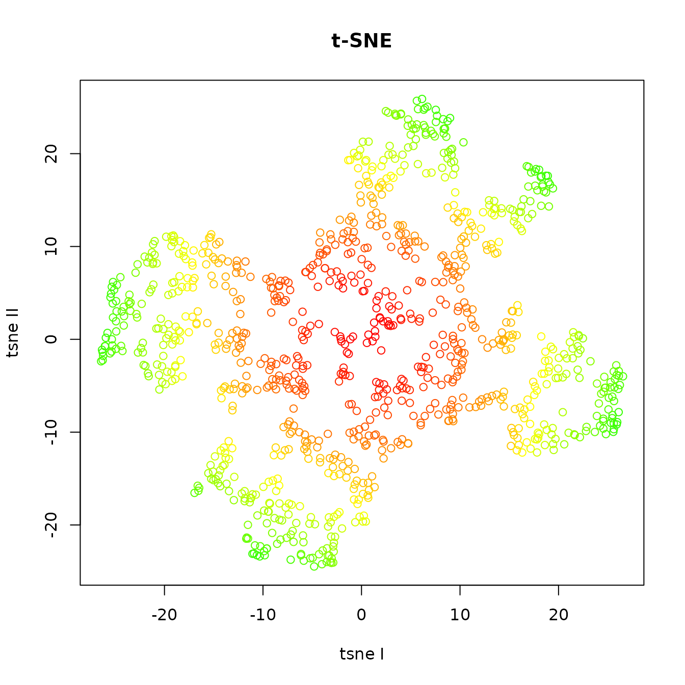
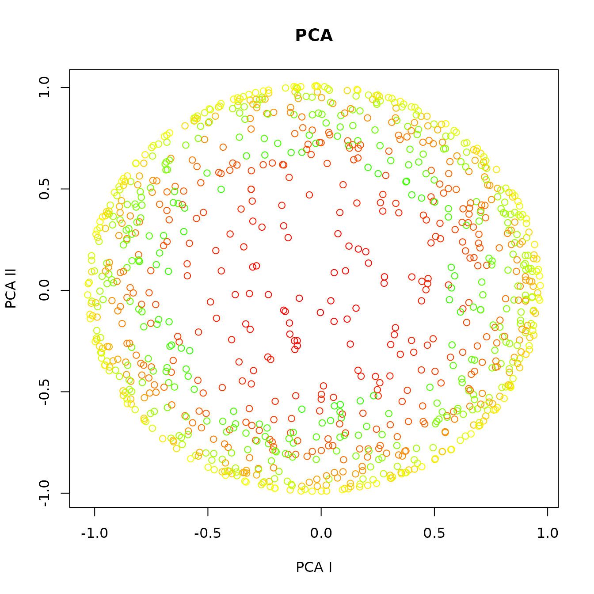
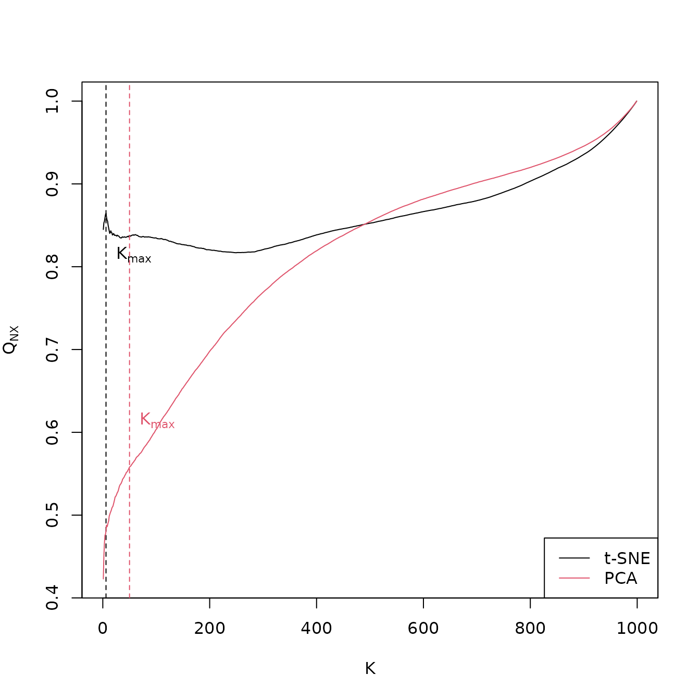

Toy example interpreting the co-ranking Matrix
Guido Kraemer
2022-08-01
Source:vignettes/coranking.Rmd
coranking.Rmd
library(knitr)
library(scatterplot3d)
library(Rtsne)
library(coRanking)
npoints <- 1000
theta <- runif(npoints, 0, 2 * pi)
u <- runif(npoints, -1, 0.8)
data <- list()
data$x <- sqrt(1 - u ^ 2) * cos(theta)
data$y <- sqrt(1 - u ^ 2) * sin(theta)
data$z <- u
data$col <-
rgb(colorRamp(colors = c("red", "yellow", "green"))( (data$z + 1) / 2),
maxColorValue = 255)
data <- as.data.frame(data, stringsAsFactors = F)Introduction
The co-ranking matrix is a tool to assess the quality of a dimensionality reduciton.
The fishbowl data set consists of a sphere with a hole on top:
scatterplot3d(data$x, data$y, data$z,
xlab = "x", ylab = "y", zlab = "z",
color = data$col)Dimensionality reductions:
dim.red <- list()
## dim.red$isomap <- isomap(dist(data[c("x","y","z")]), k = 20)
## dim.red$kpca <- kpca(~x + y + z, data)
dim.red$tsne <- Rtsne(data[c("x", "y", "z")])
dim.red$pca <- princomp(data[c("x", "y", "z")])
## plot(dim.red$isomap$points, col = data$col)
## plot(rotated(dim.red$kpca), col = data$col)
plot(dim.red$tsne$Y, col = data$col,
xlab = "tsne I", ylab = "tsne II",
main = "t-SNE")
plot(dim.red$pca$scores, col = data$col,
xlab = "PCA I", ylab = "PCA II",
main = "PCA")
the corresponding co-ranking matrices are:
Q.tsne <- coranking(data[c("x", "y", "z")], dim.red$tsne$Y)
Q.pca <- coranking(data[c("x", "y", "z")], dim.red$pca$scores[, 1:2])
imageplot(Q.tsne, main = "t-SNE")
imageplot(Q.pca, main = "PCA")
As one can observe, the t-SNE tears the data, points that were close are far apart, e.g. the upper border of the fish bowl. This is reflected in the co-ranking matrix in higher values in the upper right part. The PCA crushes the points, the data set gets flattened and points that were far away are very close now, which manifests in more values in the lower left part of the co-ranking matrix.
t-SNE also tends to keep the smaller distances between points, i.e. values close to the diagonal are higher in the upper left part, while PCA keeps the larger distances, i.e. the values close to the diagonal on the lower right are higher.
A parameter free quality measure for dimensionality reduction
Defined by Lueks et al. (2011). A general quality measure depending on \(K\) could be defined as:
\[Q_{NX}(K) = \frac{1}{KN} \sum_{k=1}^{K}\sum_{l=1}^{K}Q_{kl}\]
The values of \(Q_{NX}(K)\) are split into local and global values by
\[K_\max = \arg\max_K\text{LCMC}(K) = \arg\max_K\left(Q_{NX} - \frac{K}{N-1}\right)\]
qnx.tsne <- coRanking:::Q_NX(Q.tsne)
qnx.pca <- coRanking:::Q_NX(Q.pca)
lcmc.tsne <- LCMC(Q.tsne)
lcmc.pca <- LCMC(Q.pca)
Kmax.tsne <- which.max(lcmc.tsne)
Kmax.pca <- which.max(lcmc.pca)
yrange <- range(c(qnx.tsne, qnx.pca))
plot(qnx.tsne, xlab = "K", ylab = expression(Q[NX]), type = "l", ylim = yrange, col = 1)
abline(v = Kmax.tsne, col = 1, lty = 2)
text(Kmax.tsne, mean(yrange) + 0.1, expression(K[max]), col = 1, pos = 4)
lines(qnx.pca, main = "PCA", xlab = "K", ylab = expression(Q[NX]), ylim = 0:1, col = 2)
abline(v = Kmax.pca, col = 2, lty = 2)
text(Kmax.pca, mean(yrange) - 0.1, expression(K[max]), col = 2, pos = 4)
legend("bottomright", legend = c("t-SNE", "PCA"), lty = 1, col = 1:2)
\(Q_\text{local}\) is the mean over the values left of the maximum, \(Q_\text{global}\) is the mean over the values right of the maximum.
-
t-SNE:
- \(K_\text{max} = 1\)
- \(Q_\text{local} = 0.859\)
- \(Q_\text{global} = 0.871899\)
-
PCA:
- \(K_\text{max} = 101\)
- \(Q_\text{local} = 0.5647435\)
- \(Q_\text{global} = 0.8467223\)
\(Q_\text{local}\) is considered to be more important than \(Q_\text{global}\).